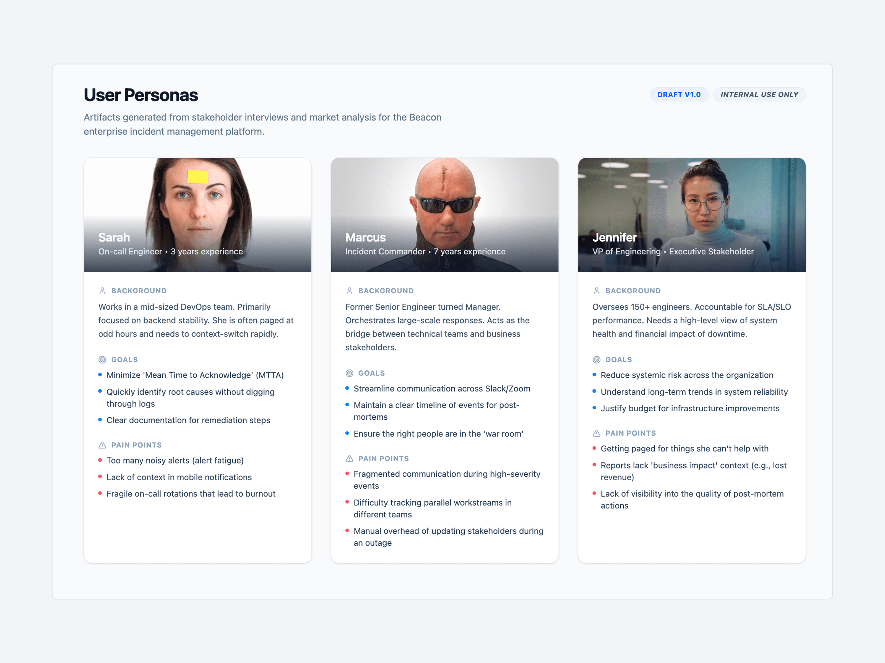
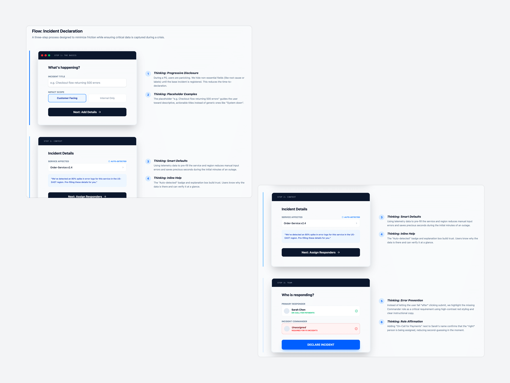
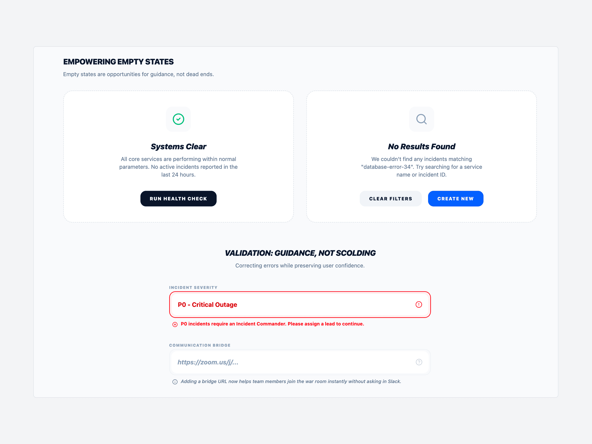
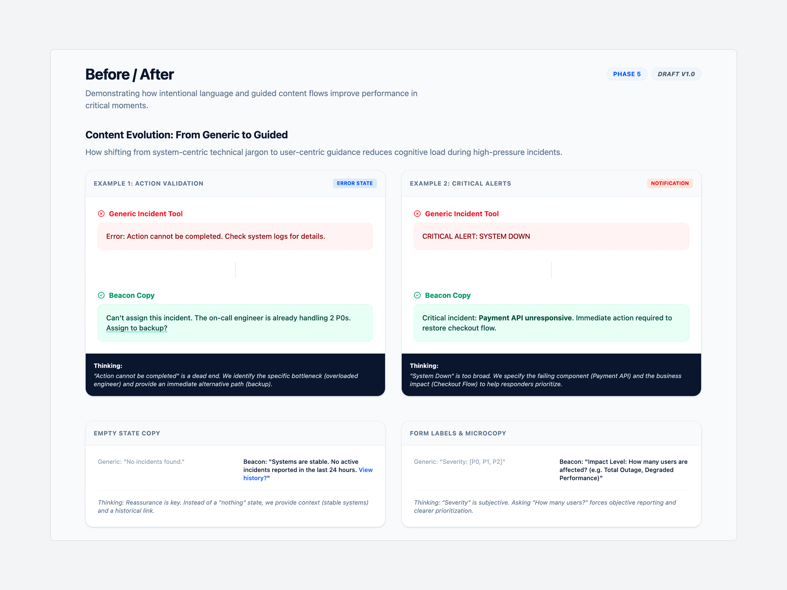

The Word an Engineer Trusts at 3 AM
A tool used during a company's worst moments cannot ask its users to decode it first.
Design Problem
Fifteen inconsistent severity labels and corporate-speak were slowing P0 response by 40% and triggering real anxiety in on-call engineers.
My Role
Content design across the full incident journey, from severity taxonomy to crisis microcopy to post-mortem.
What I Designed
A content system for incident response: a tested severity hierarchy, a verb protocol for high-pressure actions, a 50-word notification limit, and scripted copy for every failure state, governed by one principle instead of fifteen.
Fifteen ways to say the same thing
Beacon is an incident management platform built for IT operations teams responding to critical system outages. Research going into the redesign found engineers resolving P0 incidents 40% slower than they should, weighed down by corporate-speak and inconsistent severity labels.
Nearly three in four on-call engineers reported real anxiety triggered by the product's own alert notifications. New hires needed two to three weeks just to learn the interface, and executives could not translate technical alerts into business impact without someone walking them through it.
“When I get paged at 3 AM, I shouldn't have to decode what the tool is telling me. I need to know what's broken and what to do next.”
The verb decided who trusted the button
That reframed the brief: this was not a visual redesign that needed better copy. It was a content problem wearing a UI. The obvious fix, new screens and new components, was set aside on purpose: engineers under pressure needed the interface they already knew to say less and mean more, not another surface to learn.
Three personas, mapped across the full incident journey from detection to post-mortem, and a content audit of more than 200 inconsistent UI strings showed exactly where that content problem lived: fifteen different ways to describe severity, error messages that blamed users instead of guiding them, and no inline help anywhere in the product. Every fix that followed had to earn its place through testing, not intuition.

Test the Verb, Not the Guess
"Acknowledge" beat "Accept" and "I'm on it" in comprehension testing at 94%, against 68 to 71% for the alternatives.
Make Severity Legible at a Glance
A single "P0 - Critical" style hierarchy replaced fifteen inconsistent severity labels.
Enforce a Word Limit
Every system notification was capped at 50 words. During a live outage, engineers do not have time to read. They have time to scan.
Two other verbs did not make it. "Accept" read as agreement, not action, so engineers hesitated over what accepting an incident actually committed them to. "I'm on it" felt reassuring but vague under pressure, the kind of phrase that sounds fine until someone needs to know whether help is actually coming. Only "Acknowledge" tested clearly across both meanings, which is why it shipped and the other two did not.
Each decision on its own is a small content choice. Together, they form the content system Beacon runs on: less to interpret, less to misread, less standing between an engineer and the fix.
Every incident starts the same way: someone has to declare it, under pressure, in seconds. A single comprehensive form would have captured more information than the moment could afford, so the three-step declaration flow uses progressive disclosure to hide anything non-essential until the base incident is registered, smart defaults pre-filled from telemetry to cut manual entry, and inline reasoning so responders trust why a field is required instead of fighting it.
That same discipline carries into the notifications the flow triggers. A push alert and a stakeholder email drawing from the same incident record, written for two different reading speeds: one line to scan while running, one paragraph to read while deciding what to tell the business. Neither was designed to look better than the other. Both were designed so the fastest path through the record was also the safest one.

A quiet system reads as reassurance
A content system built for calm has to hold up when things go wrong twice over: the product itself failing mid-incident, five P0s firing at once, a junior engineer declaring their first-ever incident under pressure. A generic fallback message would have shipped faster. It would also have taught engineers to distrust the system the one time it mattered most, so each of those scenarios got its own scripted copy, tested against the same principles shaping the rest of the product.
Empty states and validation messages got the same care. A clear system reads as reassurance, not silence. An error reads as guidance, not a scolding.

The same generic-versus-Beacon comparison ran across error states, critical alerts, and form microcopy, checking that the "guidance, not scolding" principle held everywhere, not just in the scenarios built to showcase it.

Neither number came from a redesign
The numbers leading this page came directly out of that process. Testing the verb people actually understood, not the one that sounded right, got "Acknowledge" to 94% comprehension. Collapsing fifteen severity labels into one legible hierarchy cut misclassification 62% and got engineers to the right call 40% faster. Neither number came from a redesign. Both came from treating language as the interface, governed by one content system instead of a collection of one-off fixes.
One message cannot serve three audiences. An engineer, an incident commander, and a VP need different information about the same outage, and the fix was never to write more. It was learning to write for the right person.
Building a tool people rely on in a crisis?
I'd love to hear about your team and where content strategy could help.
Let's work together →